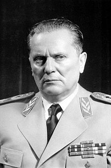
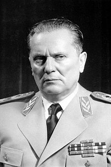

Costituiscono genocidio, secondo la definizione adottata dall'ONU, «gli atti commessi con l'intenzione di distruggere, in tutto o in parte, un gruppo nazionale, etnico, razziale o religioso». Anche la sottomissione intenzionale di un gruppo a condizioni di esistenza che ne comportino la scomparsa sia fisica sia culturale, totale o parziale, è di solito inclusa nella definizione di genocidio.
Il termine, derivante dalla greco γένος (ghénos razza, stirpe) e dal latino caedo (uccidere), è entrato nell'uso comune ed ha iniziato ad essere considerato come un crimine specifico, recepito nel diritto internazionale e nel diritto interno di molti Paesi. Il genocidio è uno dei peggiori crimini che l'uomo possa commettere perché comporta la morte di migliaia, a volte milioni, di persone e la perdita di patrimoni culturali immensi. È pertanto definito dalla giurisprudenza un crimine contro l'umanità.
Il termine genocidio fu coniato nel 1944 da Raphael Lemkin - giurista polacco di origine ebraica, studioso ed esperto del genocidio armeno - nello scrivere Axis Rule In Occupied Europe,[1] opera dedicata all'Europa sotto la dominazione delle forze dell'Asse,[2] intendendo con questo termine la distruzione di un gruppo nazionale o di un gruppo etnico. L'autore vide la necessità di un nuovo termine per descrivere l'Olocausto, e fece anche riferimenti al genocidio armeno.
Il termine, derivante dalla greco γένος (ghénos razza, stirpe) e dal latino caedo (uccidere), è entrato nell'uso comune ed ha iniziato ad essere considerato come un crimine specifico, recepito nel diritto internazionale e nel diritto interno di molti Paesi. Il genocidio è uno dei peggiori crimini che l'uomo possa commettere perché comporta la morte di migliaia, a volte milioni, di persone e la perdita di patrimoni culturali immensi. È pertanto definito dalla giurisprudenza un crimine contro l'umanità.
Il termine genocidio fu coniato nel 1944 da Raphael Lemkin - giurista polacco di origine ebraica, studioso ed esperto del genocidio armeno - nello scrivere Axis Rule In Occupied Europe,[1] opera dedicata all'Europa sotto la dominazione delle forze dell'Asse,[2] intendendo con questo termine la distruzione di un gruppo nazionale o di un gruppo etnico. L'autore vide la necessità di un nuovo termine per descrivere l'Olocausto, e fece anche riferimenti al genocidio armeno.
Durante tutta la durata del conflitto vennero perpetrate da tutte le parti in causa numerosi crimini di guerra.
Vista del campo di concentramento di Arbe usato per l'internamento della popolazione civile slovena
Nella Provincia di Lubiana, fallito il tentativo di instaurare un regime di occupazione morbido, emerse presto un movimento resistenziale: la conseguente repressione italiana fu dura ed in molti casi furono commessi crimini di guerra con devastazioni di villaggi e rappresaglie contro la popolazione civile. Le sanguinose rappresaglie attuate dal Regio Esercito italiano, per reprimere le azioni di guerriglia partigiana aumentarono il risentimento della popolazione slava nei confronti degli italiani.
« Si procede ad arresti, ad incendi fucilazioni in massa fatte a casaccio e incendi dei paesi fatti per il solo gusto di distruggere. La frase »gli italiani sono diventati peggiori dei tedeschi«, che si sente mormorare dappertutto, compendia i sentimenti degli sloveni verso di noi »
(Riporato da due riservatissime personali del 30 luglio e del 31 agosto 1942, indirizzate all'Alto Commissario per la Provincia di Lubiana Emilio Grazioli, dal Commissario Civile del Distretto di Longanatico (in sloveno: Logatec) Umberto Rosin)
A scopo repressivo, numerosi civili sloveni furono deportati nei campi di concentramento di Arbe e di Gonars.
Pagina 2
Pagina 2
Josip Broz (grafia cirillica: Јосип Броз, più conosciuto con il nome di battaglia di maresciallo Tito (Тито) Kumrovec, 7 maggio 1892 – Lubiana, 4 maggio 1980) è stato un rivoluzionario, capo di Stato e dittatore jugoslavo.
Fu cofondatore del Partito Comunista Jugoslavo (KPJ) nel 1920, membro del Partito Comunista dell'Unione Sovietica e della polizia segreta sovietica (NKVD). Dal 1935 ha comandato dal 4 luglio 1941 l'Esercito popolare di liberazione della Jugoslavia, movimento comunista della Resistenza jugoslava contro i tedeschi, gli ustascia croati e gli italiani e ha partecipato in posizione preminente dal 26 novembre 1942 al Comitato Antifascista di Liberazione Nazionale della Jugoslavia (AVNOJ).
Il movimento antifascista titino, grazie ad un'estesa guerriglia ed all'appoggio degli Alleati, in particolare dell'Armata Rossa e della Gran Bretagna, respinse l'Asse dai territori dell'ex Jugoslavia. Sconfisse anche i cetnici (JVUO) del generale Dragoljub Mihailović, movimento di liberazione rivale. A seguito delle elezioni dell'11 novembre 1945, venne dichiarato decaduto il re Pietro II e costituita la Repubblica Socialista Federale di Jugoslavia, una dittatura monopartitica che Tito governò come Primo Ministro tra il 29 novembre 1945 ed il 29 giugno 1963 e come Presidente della Repubblica dal 14 gennaio 1953 alla morte.
Josip Broz Tito il 15 aprile 1952 sposa la sua segretaria ed ex partigiana Jovanka Budisavljević. Tito è stato uno dei membri fondatori del Cominform, ma ha resistito all'influenza sovietica (cfr. Titismo) ed è divenuto uno dei maggiori promotori del Movimento dei paesi non allineati. Per quanto avesse costituito uno stato autoritario,Tito è riuscito in vita a promuovere la propria immagine sia in Jugoslavia, presentandosi come simbolo dell'unione tra le nazioni jugoslave, sia in Occidente, avvalendosi, in patria, dell'instaurazione di un culto della personalità della sua figura ed, in Occidente, del peso esercitato sugli equilibri USA-URSS dalla sua politica di stato comunista ma non sovietico.
Il 3 ottobre 2011 la Corte Costituzionale della Slovenia ha dichiarato incostituzionale la dedicazione di una strada di Lubiana a Tito, avvenuta nel 2009, dichiarando che ciò avrebbe comportato la glorificazione del regime totalitario da questi costituito e una giustificazione delle gravi violazioni dei diritti dell'uomo e della dignità umana avvenute durante il suo regime: si tratta della prima decisione in cui un organo giudiziario di uno stato dell'ex Jugoslavia ha preso una posizione netta sulla valutazione dell'opera di Tito.

Fu cofondatore del Partito Comunista Jugoslavo (KPJ) nel 1920, membro del Partito Comunista dell'Unione Sovietica e della polizia segreta sovietica (NKVD). Dal 1935 ha comandato dal 4 luglio 1941 l'Esercito popolare di liberazione della Jugoslavia, movimento comunista della Resistenza jugoslava contro i tedeschi, gli ustascia croati e gli italiani e ha partecipato in posizione preminente dal 26 novembre 1942 al Comitato Antifascista di Liberazione Nazionale della Jugoslavia (AVNOJ).
Il movimento antifascista titino, grazie ad un'estesa guerriglia ed all'appoggio degli Alleati, in particolare dell'Armata Rossa e della Gran Bretagna, respinse l'Asse dai territori dell'ex Jugoslavia. Sconfisse anche i cetnici (JVUO) del generale Dragoljub Mihailović, movimento di liberazione rivale. A seguito delle elezioni dell'11 novembre 1945, venne dichiarato decaduto il re Pietro II e costituita la Repubblica Socialista Federale di Jugoslavia, una dittatura monopartitica che Tito governò come Primo Ministro tra il 29 novembre 1945 ed il 29 giugno 1963 e come Presidente della Repubblica dal 14 gennaio 1953 alla morte.
Josip Broz Tito il 15 aprile 1952 sposa la sua segretaria ed ex partigiana Jovanka Budisavljević. Tito è stato uno dei membri fondatori del Cominform, ma ha resistito all'influenza sovietica (cfr. Titismo) ed è divenuto uno dei maggiori promotori del Movimento dei paesi non allineati. Per quanto avesse costituito uno stato autoritario,Tito è riuscito in vita a promuovere la propria immagine sia in Jugoslavia, presentandosi come simbolo dell'unione tra le nazioni jugoslave, sia in Occidente, avvalendosi, in patria, dell'instaurazione di un culto della personalità della sua figura ed, in Occidente, del peso esercitato sugli equilibri USA-URSS dalla sua politica di stato comunista ma non sovietico.
Il 3 ottobre 2011 la Corte Costituzionale della Slovenia ha dichiarato incostituzionale la dedicazione di una strada di Lubiana a Tito, avvenuta nel 2009, dichiarando che ciò avrebbe comportato la glorificazione del regime totalitario da questi costituito e una giustificazione delle gravi violazioni dei diritti dell'uomo e della dignità umana avvenute durante il suo regime: si tratta della prima decisione in cui un organo giudiziario di uno stato dell'ex Jugoslavia ha preso una posizione netta sulla valutazione dell'opera di Tito.

La locuzione secondo dopoguerra italiano indica un periodo storico compreso tra la fine della seconda guerra mondiale e gli anni seguenti in un periodo il cui termine va considerato nel contesto complessivo e che può essere determinato schematicamente da date diverse tra di loro.
Secondo un'interpretazione storiografica, il deterioramento del governo di centro-sinistra, nato come un tentativo di riformare le istituzioni politiche italiane, segnò la fine di quelle speranze di rinnovamento diffuse nel secondo dopoguerra che andrebbe quindi compreso in un'età approssimativamente estesa tra il 1945 e gli anni '60 che segnano la crisi definitiva dei partiti e della società civile che avevano fondato la Repubblica nata dopo la guerra.